Komputer adalah perangkat elektronik yang menerima, menyimpan dan memproses data menjadi informasi secara matematis atau logis sesuai dengan serangkaian instruksi yang diprogram. Program-program ini memungkinkan komputer untuk melakukan berbagai macam tugas. Sistem komputer adalah komputer lengkap yang mencakup perangkat keras, sistem operasi (perangkat lunak utama), dan peralatan periferal yang diperlukan dan digunakan untuk operasi penuh. Perangkat keras adalah bagian fisik komputer, yang meliputi komponen internal dan bagian eksternal seperti monitor, tetikus dan kibor. Perangkat lunak adalah serangkaian instruksi yang memberi tahu perangkat keras apa yang harus dilakukan, bagaimana cara melakukannya, serta kapan harus berhenti melakukannya, seperti peramban web, pemutar media, atau pengolah kata.
Komputer awal merupakan komputer program tetap, dirancang untuk membantu orang dalam melakukan perhitungan sejak zaman kuno, seperti swipoa dan kalkulator. Salah satu komputer pertama dibuat pada tahun 1941 oleh Atanasoff-Berry untuk memecahkan sistem persamaan linier. Mesin Turing dan Colossus yang dikembangkan selama Perang Dunia II, dirancang untuk memecahkan kode Enigma Jerman. Komputer awal lainnya ENIAC dan komputer lain buatan Konrad Zuse (Z3, Z4).
Komputer modern merupakan komputer program tersimpan yang dapat menjalankan serangkaian urutan instruksi. Secara konvensional, komputer modern dapat didefinisikan sebagai suatu peralatan elektronik yang terdiri dari beberapa komponen, yang dapat bekerja sama antara komponen satu dengan yang lain untuk menghasilkan suatu informasi berdasarkan program dan data yang ada. Konsep komponen-komponen komputer ini berasal dari arsitektur von Neumann, ketika John von Neumann memaparkan arsitekturnya pada tahun 1945. Program dan data dibaca dari peranti masukan (seperti pembaca kartu, kibor, tetikus, tuas kendali, dll.) ke dalam unit pemrosesan sentral (CPU). Instruksi program diproses baris demi baris secara berurutan, memindahkan data antara CPU dan memori, melakukan operasi aritmetika dan logis pada data, mengubah urutan operasi sebagai respons terhadap informasi dan mengirimkan hasilnya melalui peranti keluaran (seperti mesin cetak, monitor, dll).
Kata komputer secara umum pernah dipergunakan untuk mendefinisikan orang yang melakukan perhitungan aritmatika, dengan atau tanpa mesin pembantu. Menurut Barnhart Concise Dictionary of Etymology, kata tersebut digunakan dalam bahasa Inggris pada tahun 1646 sebagai kata untuk "orang yang menghitung" kemudian menjelang 1897 juga digunakan sebagai "alat hitung mekanis". Selama Perang Dunia II kata tersebut merujuk kepada para pekerja wanita Amerika Serikat dan Inggris yang pekerjaannya menghitung jalan artileri perang dengan mesin hitung.
Charles Babbage mendesain salah satu mesin hitung pertama yang disebut mesin analitikal. Selain itu, berbagai alat mesin sederhana seperti slide rule juga sudah dapat dikatakan sebagai komputer.
Computer OS:
Windows
MacOS
Ubuntu
Linux
Debian
ChromeOS
CentOS
PhoenixOS
Computer Parts:
CPU
GPU
RAM
MOTHERBOARD
STORAGE
PSU
INTEL
CPU adalah komponen utama yang memproses sinyal dan memungkinkan komputasi. CPU bertindak sebagai otak dari perangkat komputasi apa pun. CPU mengambil instruksi dari memori, melakukan tugas yang diperlukan, dan mengirim output kembali ke memori.
Intel Corporation adalah perusahaan multinasional dan perusahaan teknologi Amerika yang berkantor pusat di Santa Clara, California, di Silicon Valley. Ini adalah produsen semiconductor chip terbesar di dunia berdasarkan pendapatan,[3][4] dan merupakan pengembang seri x86 dari mikroprosesors, prosesor yang ditemukan di sebagian besar komputer pribadi (PC). Incorporated in Delaware,
Berdasarkan Huruf:
C: Desktop processor with high-end graphics
F: High-performance processor used with discrete graphics cards (ex. Gaming)
i3 (Intel Core i3): Prosesor kelas dasar yang biasanya ditujukan untuk penggunaan sehari-hari dan tugas ringan. Mereka umumnya memiliki jumlah inti dan thread yang lebih rendah dibandingkan dengan i5, i7, dan i9.
i5 (Intel Core i5): Prosesor kelas menengah yang menawarkan keseimbangan antara kinerja dan harga. Mereka dapat digunakan untuk tugas-tugas multitasking dan aplikasi yang membutuhkan daya pemrosesan sedang.
i5 (Intel Core i5): Prosesor kelas menengah yang menawarkan keseimbangan antara kinerja dan harga. Mereka dapat digunakan untuk tugas-tugas multitasking dan aplikasi yang membutuhkan daya pemrosesan sedang.
i9 (Intel Core i9): Prosesor kelas tertinggi yang menargetkan pengguna dengan kebutuhan komputasi yang sangat tinggi, seperti para profesional dalam bidang desain grafis, pengeditan video profesional, dan pemrosesan data besar. Prosesor i9 memiliki jumlah inti dan thread yang paling banyak dan menawarkan kinerja tertinggi di antara serangkaian prosesor Intel Core.
AMD
CPU adalah komponen utama yang memproses sinyal dan memungkinkan komputasi. CPU bertindak sebagai otak dari perangkat komputasi apa pun. CPU mengambil instruksi dari memori, melakukan tugas yang diperlukan, dan mengirim output kembali ke memori.
AMD (Advanced Micro Devices) dikenal sebagai vendor terbesar yang memproduksi prosesor dengan kualitas yang sama baiknya dengan Intel. Prosesor yang diproduksi pada kedua vendor ini memiliki bentuk fisik yang berbeda atau bisa dibedakan dengan istilah soket. Bentuk soket yang berbeda ini, akan memengaruhi penggunanya dalam membeli motherboard. Jika seseorang membeli prosesor keluaran AMD, motherboard yang mendukung soket prosesor AMD juga harus dibeli. Salah satu contoh soket prosesor AMD adalah soket AM2, sedangkan pada Intel adalah soket LGA75.
Berdasarkan Huruf:
G: Terutama digunakan pada APU (Accelerated Processing Unit), yang menggabungkan prosesor CPU dan GPU dalam satu chip.
U: Digunakan untuk prosesor mobile atau ultrabook yang menekankan efisiensi daya dan portabilitas.
H: Digunakan untuk prosesor mobile berkinerja tinggi, sering kali ditemukan dalam laptop gaming atau workstation bergerak.
X: Digunakan untuk prosesor desktop yang sering kali menunjukkan kemampuan overclocking.
XT: Varian prosesor desktop yang sering kali menawarkan kinerja sedikit lebih tinggi daripada model non-XT.
PRO: Dirancang untuk penggunaan bisnis dan profesional.
Berdasarkan Generasi:
AMD Ryzen 3 adalah prosesor kelas bawah dari keluarga Ryzen. Ia menawarkan kinerja serupa tetapi sedikit lebih rendah dibandingkan Intel Core i3.
AMD Ryzen 5 adalah prosesor kelas menengah dari keluarga Ryzen. Mereka adalah prosesor quad-core atau hexa-core. Prosesor Ryzen 5 memiliki kecepatan clock yang lebih tinggi dibandingkan dengan Ryzen 3. Kecepatan clock yang lebih tinggi memungkinkannya menangani tugas-tugas intensif. Mereka adalah pesaing langsung prosesor Intel Core i5.
AMD Ryzen 7 adalah prosesor berperforma tinggi dari keluarga Ryzen. AMD Ryzen 7 merupakan pesaing prosesor Intel Core i7. Prosesor Ryzen 7 adalah quad-core, hexa-core, atau octa-core. Mereka mampu menangani tugas komputasi intensif jauh lebih baik dibandingkan prosesor Ryzen 3 dan 5.
AMD Ryzen 9 adalah yang paling kuat dari keluarga Ryzen. Ini memiliki kecepatan clock dan core tertinggi. Pesaing langsung Intel Core i9 mereka mampu menangani tugas komputasi yang sangat intensif dan aplikasi yang memanfaatkan pemrosesan multi-core.
AMD Ryzen Threadrippers adalah prosesor multi-core berkinerja tinggi. Dirancang untuk menangani banyak multi-tasking dan aplikasi yang membutuhkan banyak hyperthreading agar dapat berjalan dengan lancar. Mereka tidak ditemukan di laptop melainkan desktop.
Athlon: Prosesor yang terjangkau, umumnya digunakan untuk penggunaan sehari-hari dan tugas ringan.
ARC
GPU adalah sirkuit elektronik khusus yang dirancang untuk memanipulasi dan mengubah memori dengan cepat guna mempercepat pembuatan gambar dalam frame buffer yang ditujukan untuk keluaran ke tampilan perangkat
Intel Arc adalah merek unit pemrosesan grafis yang dirancang oleh Intel. Ini adalah GPU diskrit yang sebagian besar dipasarkan untuk pasar game PC dengan margin tinggi. Merek ini juga mencakup perangkat lunak dan layanan grafis konsumen Intel.
Seri Intel dan Penjelasannya
A Series
Pro A40
Pro A50
Pro A60
A310
A350
A380
A580
A750
A770 8GB
A770 16GB
Mobile Series
A350M
A370M
A530M
A550M
A570M
A730M
A770M
RADEON
GPU adalah sirkuit elektronik khusus yang dirancang untuk memanipulasi dan mengubah memori dengan cepat guna mempercepat pembuatan gambar dalam frame buffer yang ditujukan untuk keluaran ke tampilan perangkat
Radeon Graphics adalah penerus Rage Line. Tiga keluarga mikroarsitektur yang berbeda dapat dibedakan secara kasar, keluarga fixed-pipeline, keluarga model shader terpadu dari TeraScale dan Graphics Core Next. ATI/AMD telah mengembangkan berbagai teknologi, seperti TruForm, HyperMemory, HyperZ, XGP, Eyefinity untuk pengaturan multi-monitor, PowerPlay untuk hemat daya, CrossFire (untuk multi-GPU) atau Hybrid Graphics. Berbagai blok SIP juga dapat ditemukan pada model tertentu di lini produk Radeon: Unified Video Decoder, Video Coding Engine, dan TrueAudio.
Radeon 500 Series
Radeon RX 550
Radeon RX 560
Radeon RX 570
Radeon RX 580
Radeon RX 590
RX Vega Series
Radeon RX Vega 56
Radeon RX vega 64
Radeon 5000 Series
Radeon RX 5500XT
Radeon RX 5600XT
Radeon RX 5700
Radeon RX 5700XT
Radeon 6000 Series
Radeon RX 6400
Radeon RX 6500XT
Radeon RX 6600
Radeon RX 6600XT
Radeon RX 6650T
Radeon RX 6700
Radeon RX 6750
Radeon RX 6700XT
Radeon RX 6800
Radeon RX 6800XT
Radeon RX 6900XT
Radeon RX 6950XT
Radeon 7000 Series
Radeon RX 7600
Radeon RX 7600XT
Radeon RX 7700XT
Radeon RX 7800XT
Radeon RX 7900XT
Radeon RX 7900XTX
NVIDIA GEFORCE
GPU adalah sirkuit elektronik khusus yang dirancang untuk memanipulasi dan mengubah memori dengan cepat guna mempercepat pembuatan gambar dalam frame buffer yang ditujukan untuk keluaran ke tampilan perangkat
NVIDIA Corporation adalah perusahaan teknologi multinasional Amerika yang didirikan di Delaware dan berbasis di Santa Clara, California. Perusahaan tersebut merancang unit pemroses grafis untuk pasar gim dan profesional, serta unit system on a chip untuk komputasi seluler dan pasar otomotif.
GeForce 10 series
GeForce GT 1030
GeForce GTX 1050
GeForce GTX 1050Ti
GeForce GTX 1060
GeForce GTX 1070
GeForce GTX 1070Ti
GeForce GTX 1080
GeForce GTX 1080Ti
GeForce TITAN X Pascal
GeForce TITAN Xp
GeForce 16 series
GeForce GTX 1630
GeForce GTX 1650
GeForce GTX 1650 Super
GeForce GTX 1660
GeForce GTX 1660 Super
GeForce GTX 1660Ti
GeForce 20 series
GeForce RTX 2060
GeForce RTX 2060 Super
GeForce RTX 2070
GeForce RTX 2070 Super
GeForce RTX 2080
GeForce RTX 2080 Ti
NVIDIA TITAN RTX
GeForce 30 series
GeForce RTX 3050
GeForce RTX 3060
GeForce RTX 3060Ti
GeForce RTX 3070
GeForce RTX 3070Ti
GeForce RTX 3080
GeForce RTX 3090Ti
GeForce 40 series
GeForce RTX 4060
GeForce RTX 4060Ti
GeForce RTX 4070
GeForce RTX 4070 Super
GeForce RTX 4070Ti
GeForce RTX 4070Ti Super
GeForce RTX 4080
GeForce RTX 4080 Super
GeForce RTX 4090
Quadro RTX Series
Quadro RTX 4000
Quadro RTX 5000
Quadro RTX 6000
Quadro RTX 8000
DDR1
Double Data Rate (DDR), juga dikenal sebagai DDR1, adalah generasi kedua dari Synchronous DRAM (SDRAM). Sesuai dengan namanya, double data rate mengacu pada kemampuannya membaca dan menulis data baik pada naik maupun turunnya jam sistem untuk mencapai hampir dua kali bandwidth SDRAM single data rate (SDR).
Spek:
DIMM Type
UDIMM
SODIMM
Density
256 MB
128 MB to 512 MB / 1 GB
Speed
400
400
DDR 1 SODIMM
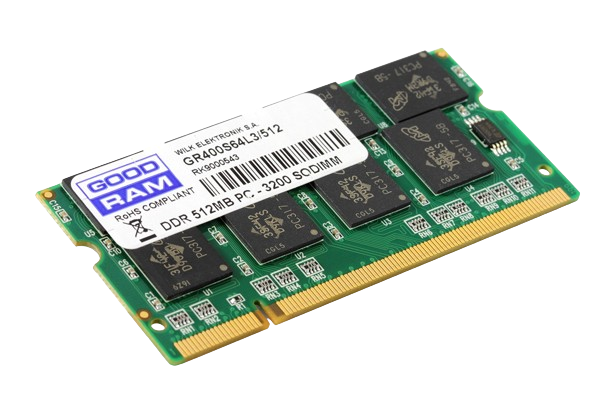
DDR 1 DIMM
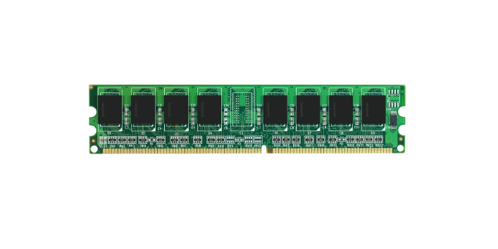
DDR 2
DDR2 adalah antarmuka memori akses acak dinamis sinkron kecepatan data ganda. Ini adalah standar JEDEC; pertama kali diterbitkan pada bulan September 2003. DDR2 menggantikan spesifikasi DDR SDRAM asli, dan digantikan oleh DDR3 SDRAM pada tahun 2007
Spek:
DIMM Type
UDIMM
SODIMM
Density
1 GB to 2 GB
256 MB / 1 GB to 4 GB
Speed
800
800
DDR 2 SODIMM
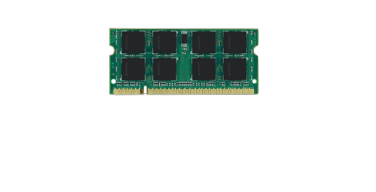
DDR 2 DIMM
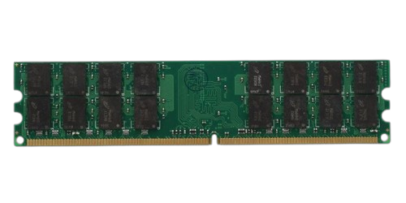
DDR 3
DDR3 adalah jenis memori akses acak dinamis sinkron dengan antarmuka bandwidth tinggi, dan telah digunakan sejak 2007. Ini adalah penerus DDR dan DDR2 berkecepatan lebih tinggi dan pendahulu sinkron DDR4. chip memori akses acak dinamis.
Spek:
DIMM Type
UDIMM
SODIMM
Density
1 GB to 16 GB
1 GB to 16 GB
Speed
1866
1866
DDR 3 SODIMM
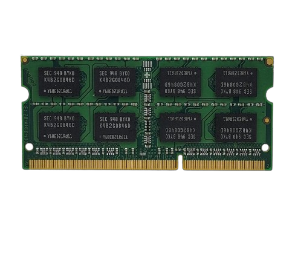
DDR 3 DIMM
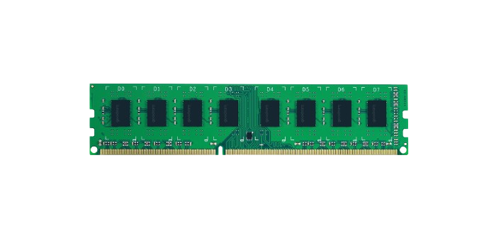
DDR 4
DDR4 adalah jenis memori akses acak dinamis sinkron dengan antarmuka bandwidth tinggi.
Spek:
DIMM Type
UDIMM
SODIMM
RDIMM/LRDIMM
Density
4 GB to 32 GB
4 GB to 32 GB
4 GB to 128 GB
Speed
3200
3200
3200
DDR 4 SODIMM
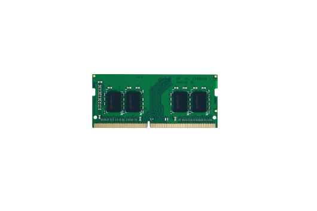
DDR 4 DIMM
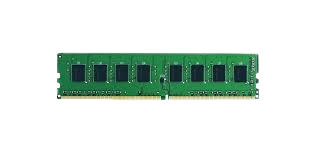
DDR 5
DDR5 jenis memori akses acak dinamis sinkron. Dibandingkan dengan pendahulunya DDR4 SDRAM, DDR5 direncanakan untuk mengurangi konsumsi daya, sekaligus menggandakan bandwidth. Standar yang semula ditargetkan untuk tahun 2018 ini dirilis pada 14 Juli 2020.
Spek:
DIMM Type
UDIMM
SODIMM
Density
8 GB to 64 GB
8 GB to 64 GB
Speed
5600
5600
DDR 5 SODIMM
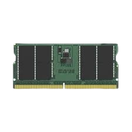
DDR 5 DIMM
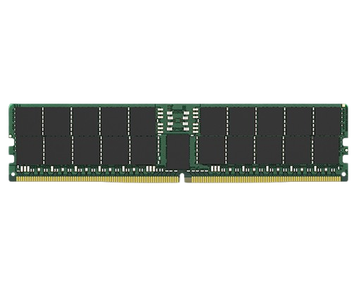
ATX
Motherboard adalah papan sirkuit cetak utama di komputer. Komponen ini memungkinkan perangkat-perangkat elektronik penting pada suatu sistem terhubung satu sama lain, misalnya unit pemrosesan sentral dan memori.
ATX adalah singkatan dari Advanced Technology Extended, dan merupakan ukuran motherboard paling umum dan standar untuk komputer desktop. Motherboard ATX berukuran 12 x 9,6 inci, dan biasanya memiliki tujuh slot ekspansi, empat atau lebih slot memori, dan beberapa port serta konektor untuk berbagai periferal.
Motherboard adalah papan sirkuit cetak utama di komputer. Komponen ini memungkinkan perangkat-perangkat elektronik penting pada suatu sistem terhubung satu sama lain, misalnya unit pemrosesan sentral dan memori.
Dalam desain komputer, microATX adalah faktor bentuk motherboard standar yang diperkenalkan pada bulan Desember 1997. Ukuran maksimum motherboard microATX adalah 9,6 x 9,6 inci. Namun, ada contoh motherboard yang menggunakan sebutan microATX meskipun memiliki ukuran lebih kecil yaitu 244 x 205 mm.
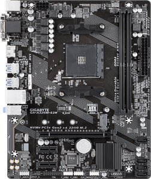
Gigabyte GA-A320M-S2H
Socket(s): 1x AM4
Form Factor: Micro-ATX
Chipset: AMD A320
RAM: 2x DDR4 @ 3200 MHz
Release Year: 2017
Audio Chip: Realtek ALC887
USB 2.0 Headers:
USB 3.0 Headers:
SATA3: 4
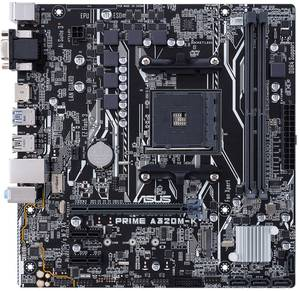
Asus Prime A320M-K
Socket(s): 1x AM4
Form Factor: Micro-ATX
Chipset: AMD A320
RAM: 2x DDR4 @ 3200 MHz
Release Year: 2017
Audio Chip: Realtek ALC887
USB 2.0 Headers:
USB 3.0 Headers:
SATA3: 4
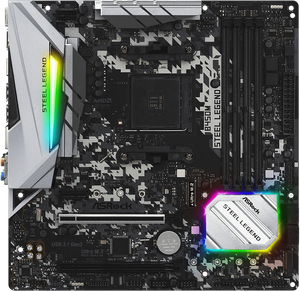
Asrock B450M Steel Legend
Socket(s): 1x AM4
Form Factor: Micro-ATX
Chipset: AMD B450
RAM: 4x DDR4 @ 3533 MHz
Release Year: 2019
Audio Chip: Realtek ALC892
USB 2.0 Headers:
USB 3.0 Headers:
SATA3: 4
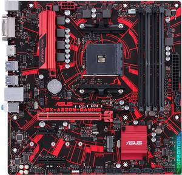
Asus EX-A320M-Gaming
Socket(s): 1x AM4
Form Factor: Micro-ATX
Chipset: AMD A320
RAM: 4x DDR4 @ 2666 MHz
Release Year: 2017
Audio Chip: Realtek ALC887
USB 2.0 Headers:
USB 3.0 Headers:
SATA3: 4
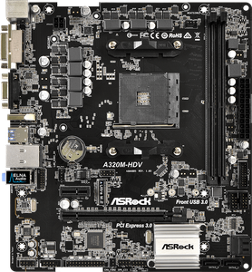
Asrock A320M-HDV
Socket(s): 1x AM4
Form Factor: Micro-ATX
Chipset: AMD A320
RAM: 2x DDR4 @ 3200 MHz
Release Year: 2017
Audio Chip: Realtek ALC887
USB 2.0 Headers:
USB 3.0 Headers:
SATA3: 4
Motherboard adalah papan sirkuit cetak utama di komputer. Komponen ini memungkinkan perangkat-perangkat elektronik penting pada suatu sistem terhubung satu sama lain, misalnya unit pemrosesan sentral dan memori.
ATX adalah spesifikasi konfigurasi motherboard dan catu daya, yang dipatenkan oleh David Dent pada tahun 1995 di Intel, untuk meningkatkan standar de facto sebelumnya seperti desain AT.
Motherboard adalah papan sirkuit cetak utama di komputer. Komponen ini memungkinkan perangkat-perangkat elektronik penting pada suatu sistem terhubung satu sama lain, misalnya unit pemrosesan sentral dan memori.
Mini-ITX adalah faktor bentuk motherboard 170 mm x 170 mm yang dikembangkan oleh VIA Technologies pada tahun 2001. Motherboard Mini-ITX secara tradisional digunakan dalam sistem komputer dengan konfigurasi kecil.
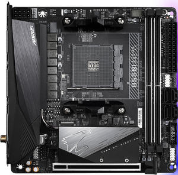
Gigabyte B550I Aorus Pro
Socket(s): 1x AM4
Form Factor: Mini-ITX
Chipset: AMD B550
RAM: 2x DDR4 @ 4866 MHz
Release Year: 2020
Audio Chip: Realtek ALC1220
USB 2.0 Headers:
USB 3.0 Headers:
SATA3: 4
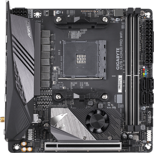
Gigabyte X570I Aorus Pro
Socket(s): 1x AM4
Form Factor: Mini-ITX
Chipset: AMD X570
RAM: 2x DDR4 @ 4400 MHz
Release Year: 2019
Audio Chip: Realtek ALC1220
USB 2.0 Headers:
USB 3.0 Headers:
SATA3: 4
Hard disk adalah sebuah hardware yang biasa digunakan untuk menyimpan semua data digital (dokumen, foto, video, musik, aplikasi, dll) pada sebuah komputer atau laptop. Perangkat ini biasanya juga disebut sebagai HDD atau hard drive.
Selain HDD bawaan dari perangkat laptop/komputer, terdapat juga hard drive yang berjenis eksternal portable (seperti flashdisk) jadi praktis untuk dibawa ke mana-mana.
HDD merupakan perangkat penyimpanan data non-volatile. Artinya, perangkat penyimpanan akan tetap menyimpan data walaupun perangkat utama dimatikan. Saat kamu mematikan laptop/komputermu, datamu akan tetap ada di sana dan tidak akan hilang.
Bahkan, ketika laptop/komputermu rusak kamu tidak akan kehilangan data di HDD tersebut. Kamu tetap bisa mempertahankan datamu dengan mengambil HDD-nya dan mengakses datanya melalui laptop/komputer lain.
HDD menyimpan data berdasarkan ukuran file dalam satuan byte baik itu kilobyte (KB), megabyte (MB), gigabyte (GB), atau terabyte (TB).
HDD hadir dengan berbagai macam ukuran kapasitas yang mampu menyimpan hingga milyaran bytes. Semakin besar kapasitas HDD, maka semakin rendah kecepatan RPM-nya (rotate per minute)
RPM adalah kecepatan putar dalam jangka waktu satu menit yang dilakukan oleh salah satu komponen yang disebut platter.
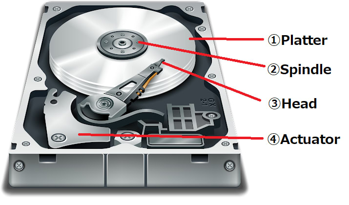
1. Platter
Platter terbuat dari bahan keras seperti aluminium, kaca atau keramik yang kemudian diselimuti dengan bahan magnetis yang berfungsi untuk menyimpan data di komputer.
Sebuah harddisk berkapasitas besar biasanya dilengkapi dengan platter yang lebih dari satu, yang disusun bertumpuk di tengah spindle.
Setiap hard drive memiliki kecepatan putar platter yang berbeda-beda tergantung pada jenisnya, namun kecepatan yang banyak digunakan saat ini adalah 5.400 RPM.
2. Spindle
Spindle merupakan komponen yang berfungsi untuk menahan platter agar tetap berada di posisinya pada saat platter berputar. Selain itu pada spindle juga terdapat motor yang berfungsi untuk memutar platter dengan kecepatan yang tinggi.
3. Read/write head
Read/write head adalah komponen yang berfungsi untuk membaca, menulis, atau menghapus data pada platter.
Terdapat satu head di tiap sisi platter, satu sisi di atas berfungsi untuk membaca dan satu sisi di bawah untuk menulis. Dalam hal menjalankan fungsinya read/write head ini dibantu dengan actuator arm.
4. Read/write actuator arm
Read/write actuator arm berperan layaknya sebuah lengan pada jenis pemutar musik jaman dulu. Arm ini berfungsi untuk menyesuaikan posisi read/write head sesuai dengan lokasi data.
SSD
SSD adalah singkatan dari Solid-State Drive yang merupakan perangkat untuk menyimpan data pada laptop maupun komputer. Berbeda dengan HDD (Hard Disk Drive), SSD menyimpan data menggunakan memori non-volatile berbasis flash, sehingga pada SSD tidak ada komponen mekanis yang bergerak. Hal ini membuat SSD dapat bekerja dengan lebih cepat dan tidak cepat panas.
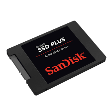
SSD SATA
Teknologi Serial ATA (SATA) diperkenalkan kembali pada tahun 2000 sebagai peningkatan dari teknologi Parallel ATA yang saat itu kemajuannya terhambat karena faktor ukuran kabel, biaya, performa, dan fungsionalitas. Kedua teknologi ini memadai untuk hard disk drive (HDD), yang secara substansial kurang mampu jika dibandingkan solid state drive (SSD) saat ini. Kehadiran SSD berbasis SATA menunjukkan bahwa bus ATA telah mencapai batas performanya. Saat HDD hanya mampu mencapai kecepatan 50-120MB/dtk dalam performa tulis, SSD dapat memaksimalkan bus SATA pada kecepatan 550MB/dtk. Meskipun memiliki bus terbatas, adalah hal umum jika kita melihat peningkatan performa 10-15 kali pada keseluruhan sistem ketika menggunakan SSD berbasis SATA sebagai pengganti teknologi HDD yang lama.
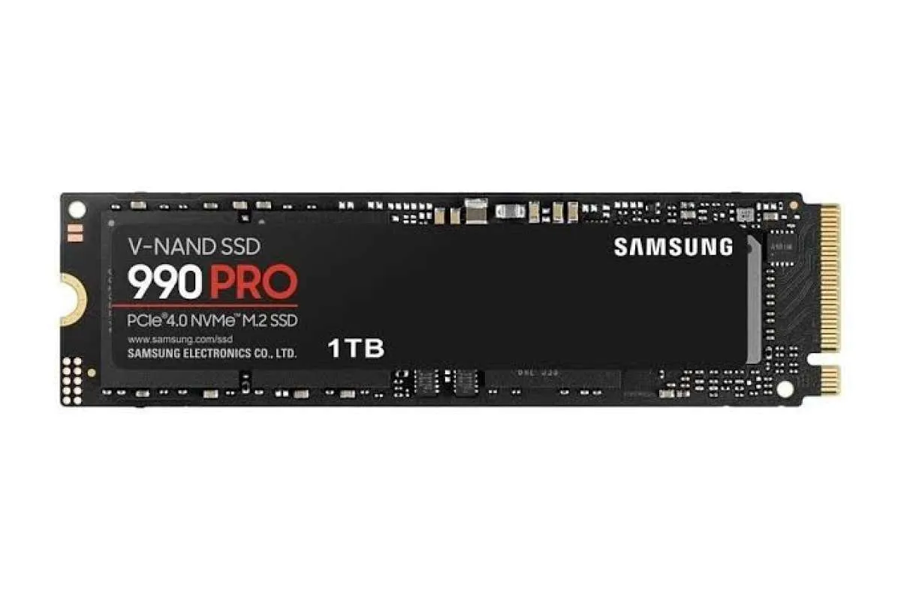
SSD NVME
Teknologi Serial ATA (SATA) diperkenalkan kembali pada tahun 2000 sebagai peningkatan dari teknologi Parallel ATA yang saat itu kemajuannya terhambat karena faktor ukuran kabel, biaya, performa, dan fungsionalitas. Kedua teknologi ini memadai untuk hard disk drive (HDD), yang secara substansial kurang mampu jika dibandingkan solid state drive (SSD) saat ini. Kehadiran SSD berbasis SATA menunjukkan bahwa bus ATA telah mencapai batas performanya. Saat HDD hanya mampu mencapai kecepatan 50-120MB/dtk dalam performa tulis, SSD dapat memaksimalkan bus SATA pada kecepatan 550MB/dtk. Meskipun memiliki bus terbatas, adalah hal umum jika kita melihat peningkatan performa 10-15 kali pada keseluruhan sistem ketika menggunakan SSD berbasis SATA sebagai pengganti teknologi HDD yang lama.
Power Supply Unit
Satuan pencatu daya mengubah AC utama menjadi daya DC yang diatur tegangan rendah untuk komponen internal komputer. Komputer pribadi modern secara universal menggunakan catu daya mode aktif.
Jenis-jenis PSU:
Non-Modular PSU:
Semua kabel terpasang pada PSU dan tidak dapat dilepas.
Kabel yang tidak digunakan mungkin harus diatasi atau disembunyikan dalam kasus komputer.
Semi-Modular PSU:
Sebagian kabel terpasang tetap pada PSU, sedangkan sebagian lagi dapat dilepas.
Memberikan fleksibilitas dalam mengelola kabel, memungkinkan pengguna untuk mengganti atau menghilangkan kabel yang tidak diperlukan.
Fully Modular PSU:
Semua kabel dapat dilepas sepenuhnya dari PSU.
Memberikan tingkat fleksibilitas tertinggi dalam mengelola kabel, memungkinkan pengguna untuk menggunakan kabel yang sesuai dengan kebutuhan mereka.
80 PLUS Certification:
Seri sertifikasi efisiensi yang menunjukkan seberapa efisien PSU dalam mengubah daya listrik dari dinding ke daya yang digunakan oleh komponen.
Jenis sertifikasi meliputi 80 PLUS, 80 PLUS Bronze, 80 PLUS Silver, 80 PLUS Gold, 80 PLUS Platinum, dan 80 PLUS Titanium, dengan Titanium menjadi yang paling efisien.
Single Rail vs. Multi Rail:
Menunjukkan jumlah "rail" atau jalur yang menyediakan daya pada PSU.
Single rail memberikan seluruh daya di satu jalur, sementara multi rail membagi daya menjadi beberapa jalur.
Form Factor:
ATX (Advanced Technology eXtended) adalah standar umum untuk PSU, tetapi ada juga form factor lain seperti SFX (Small Form Factor), TFX (Thin Form Factor), dan EPS (Enterprise Power Supply) untuk server.
NEWS
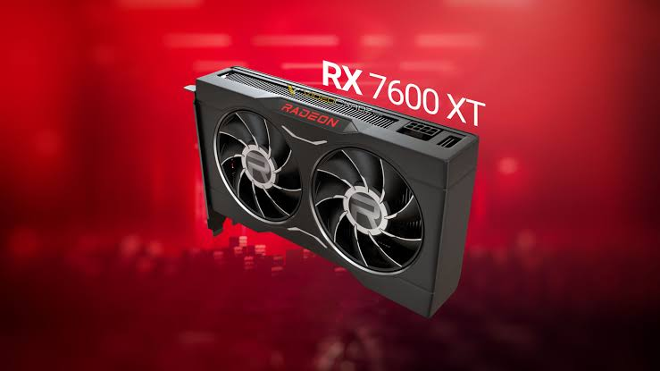
AMD RX7600 XT
AMD meluncurkan AMD Radeon RX 7600 XT, kartu grafis performa tinggi dengan fitur lengkap yang dirancang untuk mendukung game-game paling menuntut dan aplikasi pembuatan konten saat ini dan di masa depan. Dilengkapi VRAM 16GB, unit komputasi AMD RDNA 3 performa tinggi, teknologi AI canggih, dan akselerator raytracing khusus, kartu grafis Radeon RX 7600 XT menawarkan pengalaman gaming dan raytracing yang mulus, cepat, dan visual menakjubkan pada resolusi 1080p, serta memberikan kreativitas pengguna dalam bermain game, beban kerja AI dan pembuatan konten generasi berikutnya Radeon RX 7600 XT tersedia mulai hari ini dari mitra AMD, termasuk ASRock, ASUS, Gigabyte, PowerColor, dan Sapphire, dengan harga SEP 5,990 juta Rupiah.
25 Januari 2024
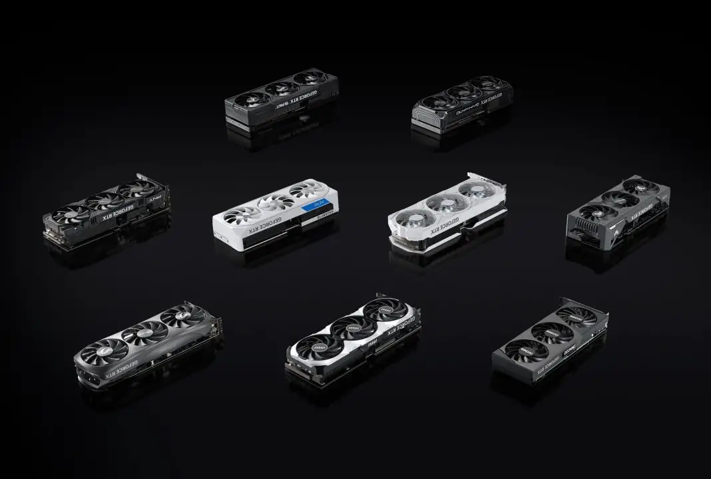
NVIDIA Hadirkan Dukungan Game Ready Driver untuk RTX 4070 Ti Super
NVIDIA telah merilis GeForce RTX 40 Super terbaru, termasuk diantaranya yaitu GeForce RTX 4070 Ti SUPER. Bersamaan dengan kehadiran GPU tersebut, NVIDIA juga menghadirkan dukungan Game Ready Driver baru yang membawa fitur-fitur baru. RTX 4070 Ti SUPER menawarkan peningkatan kinerja dengan jumlah inti dan memori yang lebih besar, serta dukungan untuk layar 1440p dan bahkan game 4K. GPU GeForce RTX 4070 Ti SUPER ini memiliki kecepatan 1.6X lebih cepat dibandingkan dengan GeForce RTX 3070 Ti, dan DLSS 3 yang 2.5X lebih cepat di game-game yang grafisnya sangat tinggi. Selain itu, NVIDIA juga merilis RTX Video HDR yang menggunakan Tensor Cores GeForce RTX untuk meningkatkan konten SDR menjadi HDR. Fitur tersebut memungkinkan konversi konten video SDR menjadi HDR secara otomatis menggunakan kecerdasan buatan dan Tensor Cores pada GPU. NVIDIA juga memperkenalkan RTX Remix open beta, yang merupakan rangkaian alat kuat untuk para kreator konten yang fokus pada modding game PC.
25 Januari 2024
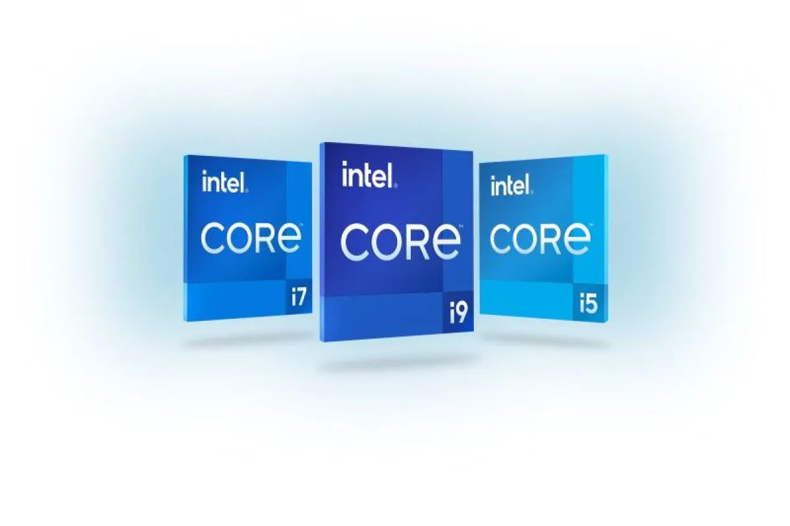
Intel Gen 14
Perusahaan teknologi Intel meluncurkan prosesor desktop Intel Core 14th Gen terbaru untuk memberikan pengalaman terbaik bagi konsumen serta menjamin adanya kinerja layanan yang lebih optimal. Salah satu unggulan prosesor desktop Intel Core 14th Gen adalah i9-14900K yang menjadi prosesor desktop tercepat di dunia hingga 24 core dan 32 thread dengan kecepatan 6 GHz untuk memberikan keunggulan yang dibutuhkan para gamer. "Prosesor Intel Core 14th Gen menghadirkan pengalaman bermain game yang imersif dengan peningkatan kinerja game hingga 23 persen dibandingkan dengan prosesor pesaing terkemuka, sementara fitur-fitur baru yang berfokus pada game seperti Intel Application Optimization (APO) memastikan threading aplikasi yang lebih baik, Prosesor Intel Core 14th Gen yang unlocked menawarkan pengalaman overclocking yang tak tertandingi bagi ahli dan pemula. Prosesor desktop unlocked generasi terbaru turut menyertakan fitur Intel XTU AI Assist baru untuk overclocking yang dipandu oleh AI, serta dukungan untuk kecepatan DDR5 XMP yang melampaui 8.000 megatransfer/detik (MT/S). Kemudian, rangkaian prosesor desktop terbaru itu dilengkapi dengan dukungan terintegrasi untuk Wi-Fi 6/6E dan Bluetooth 5.3, serta dukungan terpisah untuk teknologi nirkabel Wi-Fi 7 dan Bluetooth 5.4 yang baru.